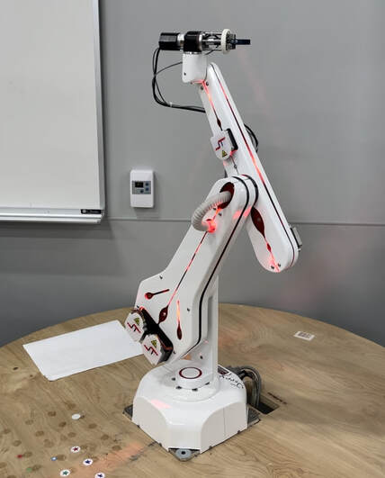
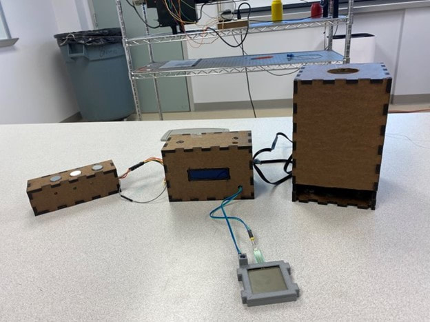
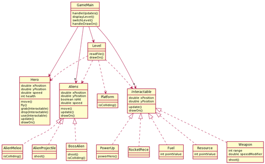
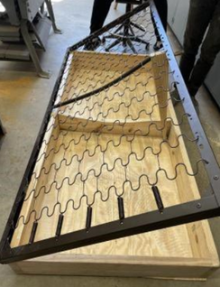

Portfolio
-
Development of Blended Swarm Communication Methods
Course Project
Abstract:
This proposal seeks to improve communication channels and navigational strategies within a group, enabling effective conveyance of the value and direction of a goal or reward while enhancing the collective’s ability to pursue and attain these objectives. The success of these collective systems hinges on effective communication, adaptive response to environmental stimuli, and the synergistic interaction of individual units to achieve outcomes that surpass the capabilities of any single component. This work will blend methods of transition properties, robot density distribution, and recognition of environmental and cooperative patterns. Improvements to swarm communication is integral to all future swarm applications.
-
Low-Cost 2-DOF Robot Arm
Undergraduate Research


The goal of this project is to develop a two degree-of-freedom (DOF) planar robot arm that is consistent, robust, easily reproducible, and particularly, inexpensive, for use in ME 445, Robot Dynamics and Control, for in-class demonstrations, labs, and homework. A 2-DOF robot arm would be useful for application in ME 445 due to its ability to relay key concepts such as parameterization, kinematics, and feedback control, while remaining simple enough to be solved by hand. Throughout much of ME 445 many new topics are introduced with examples involving 2-DOF planar arms. Their relative simplicity allows for learning and reinforcement of applicable skills for higher-DOF robots while remaining demonstrable by hand calculation in a 50-minute class period. This research is focused on the design and optimization of the components and robustness of the arm.
-
6-DOF Robot Arm Manipulation
Course Project
This lab used an ST Robotics R12 robot. A general model was provided and to begin the project, with the first steps being creating MATLAB functions to calculate both forward and inverse position kinematics. A list of poses was provided in the form of joint angles in Cartesian Space for testing with the functions and use on the robot. From studying this and learning about the arms limitations, it allowed improved learning and understanding of what position singularities look like and when and how they can appear. The project concluded with creation of MATLAB functions to calculate forward and inverse velocity kinematics and the verification of the arms velocity and position singularities using forward velocity kinematics and Jacobian matrices.
-
Interactive, Automated Dog Treat Dispenser
Course Project
For ME430, Mechatronic Systems, a 10-week long project was a major portion of the grade. Teams were given open ended criteria of "make something 'interesting' that has multiple inputs and outputs of both digital and analog nature." I was living with a dog at the time so I decided to try to stimulate him while giving him some treats while nobody was around. The large box on the right housed a treat reservoir with a stepper motor and paddle that would agitate the treats. The center box contained the microcontroller, LCD displaying treats dispensed and barks detected, and the power supply. Further peripherals are on the left and front, with LEDs and pushbuttons, as well as a force-sensitive resistor. The goal, while lofty for the young canine, was for the dog to press the button corresponding to the LED that lit up.
-
Jet-Pac Man
Course Project
The final project for CSSE220: Object-Oriented Programming, was to make a semi-accurate recreation of the classic ZX Spectrum JetPac game. The project involved high level planning with UML diagrams, as well as implementation of various game functions including movement, world generation, and enemy interactions. A major emphasis was put on using class abstraction and inheritance. My game had multiple aliens and interactables which used inheritance from parent classes for basic functions before being expanded on in their own sections. The overall structure of the code used the Java Swing library.
-
Under-Bed Storage System
Course Project
For freshman design, my team chose to attempt to provide a solution to storage issues in the residence halls on campus. Using a surplus bedspring from the bunks, we fabricated a simple box and propping mechanism to add over 10 cubic feet of better utilized storage space to the room. Further work was planned to use gas springs for further ease of use but was cut short due to time and cost constraints. Though simple in design, the project's main benefits were learning and applying stakeholder perspectives and technical perspectives to a project from start to finish.